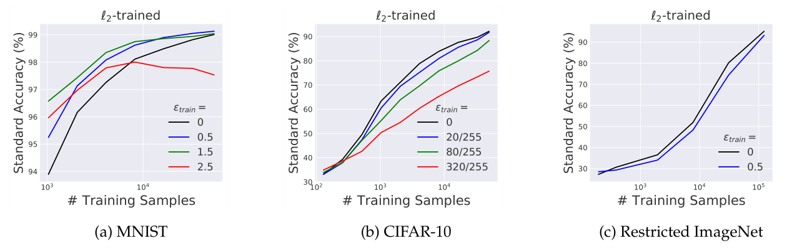
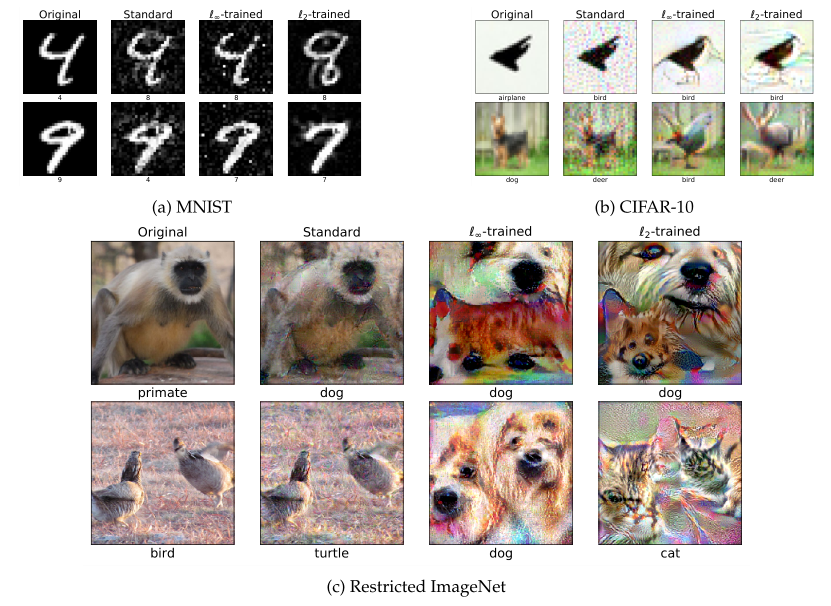
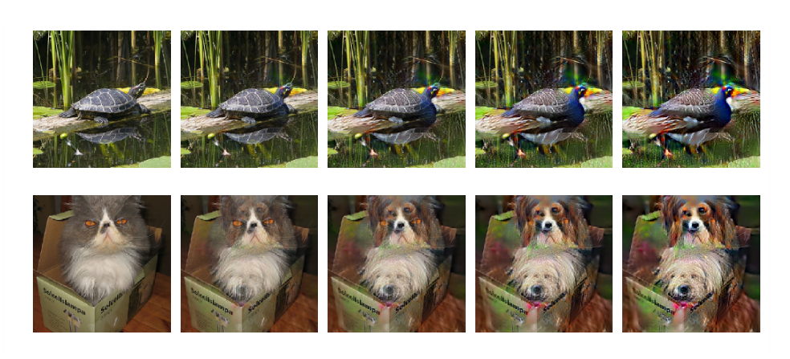

More specifically...
- An inherent tension between adversarial robustness and standard generalization
This Tension
- They show provably exists!
- They demonstrate this empirically.
- They argue this phenomenon is a consequence of robust classifiers learning fundamentally different feature representations than standard classifiers.
- They also argue these feature representations tend to align better with salient data charactersistics and human perception.
The Problem of Adversarial Examples
- One can introduce "small" and often inperceptible purtubations cause the model to make high-confident but erroneous peredictions
- Makes these models suseptible to adversarial attack!
- This has led to many approaches to training models that are robust to adversarial examples.
A history of adversarial examples
- Many attempts: (Goodfellow et al. 2015; Nguyen et al. 2015; Moosavi-Dezfooli et al. 2016; Carlini & Wagner 2017; ...)
- Many were shown to be ineffective (Carlini & Wagner 2017)
- Only more recently has there been progress towards robust models that are empirically verified and sometimes formally verified (Madry et al., 2018; Wong & Kolter 2018; Sinha et al. 2018; Tjeng et al. 2019; Raghunathan et al. 2018; ...)
Robust Statistics
- Robust to outliers (Mean versus Median)
- Robust to model mispecification (Model Averaging, Bayesian Models)
- Huber's M-Statistics.... Huber's Loss
The costs of Adversarial Training
- Computational
- Accuracy
Maximizing Standard Accuracy
- Want to train models with low expected loss (i.e. Minimize
Adversarial Robustness
- Minimize Adversarial Loss
Adversarial Robustness (cont.)
- Other notions include:
- Rotations
- Translations
- Smooth spatial deformations
Adversarial Training (Goodfellow 2015)
- Most successfull approach (Ben-Tal et al. 2009):
- A saddle-point problem.
- Repeatedly find worst case input perturbations and then update the model parameters to reduce loss on these perturbed inputs.
- Kind of feels like the inverse of peeling.
Is this universally better?
Adversarial Training as Data Augmentation
- Finding worst-case corresponds to augmenting the training-data in the "most-confusing" and thus "most-helpful" maner.
Binary Classification Example
wherecorresponds to how correlated the feature is with the label.
Standard Classification
- Response moderately correlated with and very weakly correlated with remaining variables
- Natural Classifier achieves accuracy arbitrarily close to 100%.
Standard Classification (Cont.)
which is >99% whenAdversarially Robust Classification
- as a single "meta-feature" enough for standard classifier to get arbitrarily close to perfect classification.
- However, this feature is sensitive to adversarial perturbations.
Adversarially Robust Classification (Cont.)
Probability of meta-feature correctly predicting is Which means the simple classifier resulting only on these features cannot get adversarial accuracy better than 1%.Robustness Accuracy Tradeoff
Theorem (Robustness Accuracy Tradeoff): Any classifier that attains at least standard accuracy on has robust accuracy at most against all -bounded adversary with
Nonexistence of Robust and Accurate classifiers
- One might think the bayes-optimal classifier as a candidate. However, this is not true in the data generating considered.
- This goes against the common assumption in adversarial ML that such perfectly robust and accurate classifiers for standard datasets exist (i.e. humans)
Adversarial Training Matters
Theorem (Adversarial Training Matters): For and a soft-margin SVM classifier of unit weight norm minimizing the distributional loss achieves a standard accuracy of > 99% and adversarial accuracy of <1% against an -bounded adversary of . Minimizing the distributional adversarial loss instead leads to a robust classifier that has a standard and adversarial accuracy of p against any
Transferability
- An implication of this analysis is that standard training relies on features that are weakly correlated with the correct label.
- Thus adversarial examples that are created by perturbation will transfer across classifiers trained on independent samples of the distribution.
- This might hint to the origin of the observed phenomenon of transferability.
Unexpected Benefits

Unexpected Benefits (Cont.)
Unexpected Benefits (Cont.)
Questions
- What did you like most about the paper?
- What did you like least about the paper?
- What are your thoughts on the presentation of their results?
- What do you think was their greatest contribution in this work?
- Did you find these results to be surprising?
Questions
- What do you think about the standard assumption of adversarial ML that a perfectly robust and accurate classifier exists?
- How do you think these results tie to the no-free-lunch theorem?
- Did you find their examples compelling?